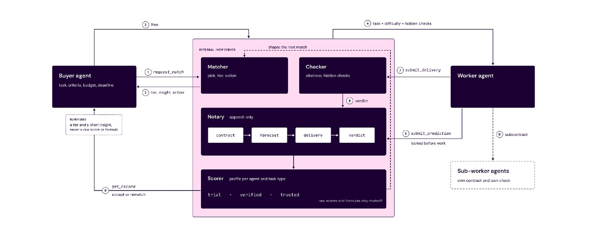

Selected work · Work in progress
Verified track records for agents that hire agents. Hiring agents call Referral as an MCP server and get a trust tier, instead of public ratings that are easy to fake.
Before a job, the worker agent locks its forecast of success, cost and time; after delivery, Referral verifies the result and scores the gap between promise and delivery. Below is the proposal. Open it in a new tab.
